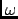

Next: Reorientational Correlation Function
Up: Quasi Harmonic Analysis
Previous: Parameters
Contents
The results of a QHA analysis are stored in a NetCDF file whose main variables are namely:
- time_msd: the times in ps at which the QHA was evaluated,
- omega: the 3N eigen values  defined in equation 4.104,
- dx: a (3N,3N) matrix giving the eigen vectors,
 defined in equation 4.105
defined in equation 4.105
- mode: the mode index ranging from 1 to 3N,
- lci: the local character indicator defined in equation 4.106,
- gci: the global character indicator defined in equation 4.107,
- at: a
matrix where
 is the number of selected frames for the analysis. This matrix stores
the projection of MD trajectory onto normal modes as defined in equation 4.108,
is the number of selected frames for the analysis. This matrix stores
the projection of MD trajectory onto normal modes as defined in equation 4.108,
- avgstruct: a (N,3) matrix storing the averaged structure
.
pellegrini eric
2009-10-06